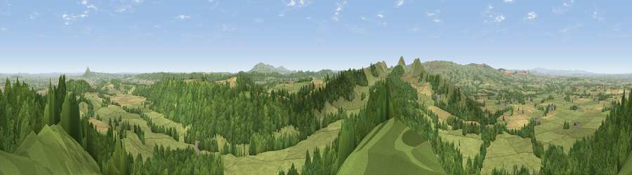

Lodge Hill
#2195 in England · top 6% of its area beats it · near Acton BurnellThe view, rendered

A 360° render of this exact spot computed from the terrain model, tree cover and land cover — summer colours, afternoon light, calibrated against photographs of famous viewpoints. Real trees, hedges and buildings will differ in detail.
The panorama
Grey silhouette: terrain skyline in each direction (720 bearings, Earth curvature and refraction included). Dashed green: skyline with trees (+15 m) and buildings (+8 m) as obstacles. Blue strip: how far the ground is visible on each bearing.
Where the view opens
Wedge length = distance to the farthest visible ground on that bearing (vegetation-aware). Rings at 10, 25 and 50 km.
What fills the view
56% woodland · 35% grassland · 8% cropland
Angular shares of the visible panorama (visual magnitude), not map area. Landscape diversity 0.40 (0–1 Shannon).
Key numbers
More beautiful places nearby
The staircase of upgrades: each row has a higher view potential than everything closer. Driving times are estimates from straight-line distance, calibrated against real road routing — check an actual route before setting out.
| Place | Direction | Drive | Score |
|---|---|---|---|
| Viewpoint near Acton Burnell | N · 0 km | ~2 min | 78.0 |
| Viewpoint near Leebotwood | WSW · 3 km | ~6 min | 80.7 |
| The Lawley | WSW · 3 km | ~7 min | 85.8 |
| Viewpoint near Little Wenlock | NE · 14 km | ~25 min | 86.6 |
| North Hill | SSE · 58 km | ~80 min | 86.8 |
| Worcestershire Beacon | SSE · 59 km | ~82 min | 87.1 |
| Viewpoint near West Quantoxhead | SSW · 161 km | ~183 min | 87.9 |
| Viewpoint near Bossington | SSW · 162 km | ~184 min | 88.3 |
52.58644, -2.71175 · source: dobih hill · position refined by local search. Computed location — check access rights before visiting.